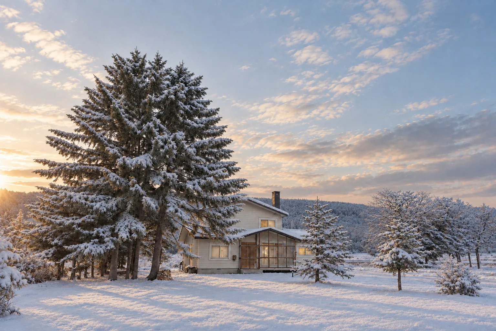

不動産開発会社・デベロッパーの方
収益不動産の企画や事業収支を、東京の目線でも見てみたい。宿泊や新しい用途の開発に挑戦したい。
UBAKUConsulting
不動産開発、新規事業、そして宿の開業まで。旭川・北海道をはじめ、全国対応。
東京の実務と、地方の現場を、
ひとつの事業に。
東京の大手不動産会社で培った、収益不動産の開発と新規事業の実務。そして、北海道で宿を一から立ち上げ、運営してきた現場の経験。その両方を持つチームとして、事業の組み立てから、かたちになるまで、となりで一緒に考えます。
01Tokyo × Local.
収益不動産の開発や新規事業に携わってきた数字の見方と、北海道で宿を立ち上げた現場の感覚。どちらか一方では見えないところまで、一緒に考えます。
02Tested First.
机の上の提案ではなく、自分たちの宿で実際に試し、うまくいったやり方をお渡しします。
03Run It Yourself.
運営を代わりに引き受けるのではなく、少ない手間で回せる仕組みを残します。支援で使う仕組みは、チーム内の研究開発部門「UBAKU Lab」で開発・検証しています。
収益不動産の開発、賃貸住宅やオフィスの企画、投資用不動産の検討まで。立地や需要の読み方、事業収支、商品の企画を、地域の事業者の方と一緒に組み立てます。
For developersデベロッパーの新しい事業、建設会社がはじめる不動産事業など、「これまでやったことのない事業」の立ち上げを支援します。事業の組み立てから、数字の見通し、小さく試して確かめる進め方まで。
For developers / construction運営代行ではなく、オーナーが少ない手間で、自分の力で宿を回せる仕組みづくりを支援します。物件選びと収支の見通しから、予約サイトへの登録、撮影、清掃やゲスト対応の仕組みまで。
料金の目安を見る →収益不動産の企画や事業収支を、東京の目線でも見てみたい。宿泊や新しい用途の開発に挑戦したい。
建てるだけでなく、自社で不動産事業をはじめたい。保有する土地や建物を、事業として活かしたい。
空き家や使っていない建物で、宿を開きたい。開業したものの、運営の手間や集客に悩んでいる。
遊休不動産の活用や、地域に人を呼ぶ新しい事業を、企画の段階から一緒に考えたい。

1日1組限定の、一棟貸しの宿。
美瑛の集落・中宇莫別に建つ築約60年の建物を、物件探しから自分たちで手がけ、2026年1月に開業しました。いまお客さまにお渡ししている支援は、すべてこの宿で一度試したものです。
UBAKU Villa 宇莫別荘、開業
一棟まるごと、最大10名まで
海外から訪れるゲストの割合（2026年7月時点）
Airbnb・Booking.comでの評価（2026年7月時点）
旭川・北海道をはじめ、全国でご相談を承ります
はい。不動産開発会社・デベロッパー・建設会社の方からの、事業企画や新規事業のご相談をお受けしています。スポットのご相談から、一定の期間の伴走まで、内容に合わせてご提案します。
東京の事例をそのまま持ち込むのではなく、地域の需要や事業規模に合わせて組み立て直します。北海道で自分たちの宿を立ち上げた経験があるからこそ、地方の実情に合うかたちを一緒に探せます。
UBAKU Consulting は運営代行ではなく、オーナーご自身が少ない手間で宿を回せるようにする支援です。仕組みづくりと、運営が軌道に乗るまでの改善の相談でお手伝いします。
旭川・北海道をはじめ、全国対応です。打ち合わせはオンラインを中心に、必要に応じて現地にうかがいます。
はい。予約サイトの登録だけ、撮影だけ、といったご相談も歓迎です。必要なものを、必要なだけお手伝いします。
はい。宿をはじめるかどうかを決める前の、最初の一歩として無償でお受けしています。そのうえで、必要なところだけをお申し込みいただけます。
物件の売買・仲介は行っていません。物件選びの相談や、事業として成り立つかどうかの検討をお手伝いします。
UBAKU Design
建物の改修は、UBAKU Design がデザイン監修とプロデュースで伴走します。宇莫別荘の改修のビフォー・アフターも、こちらでご覧いただけます。
まずは、お話から。
不動産開発のこと、新しい事業のこと、宿のこと。まだ形になっていない思いつきでも大丈夫です。いまの状況をお聞かせください。